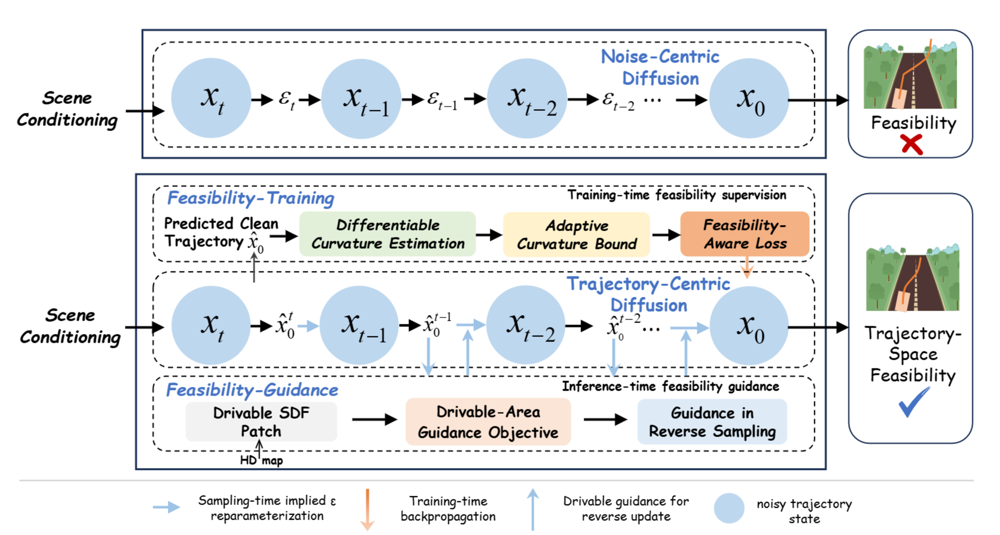
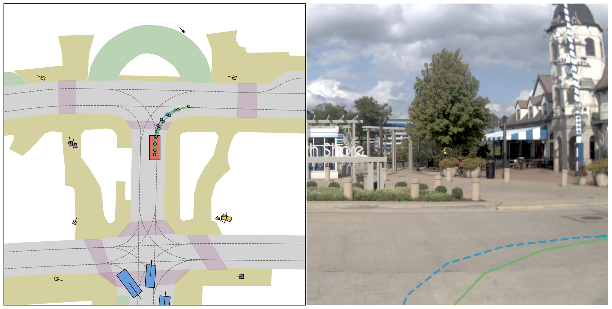
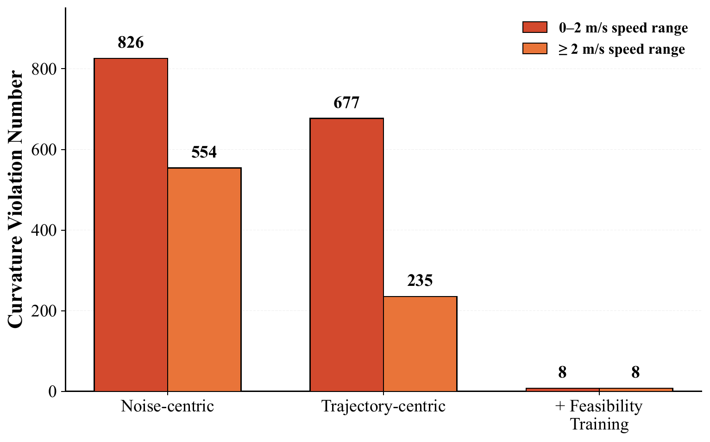
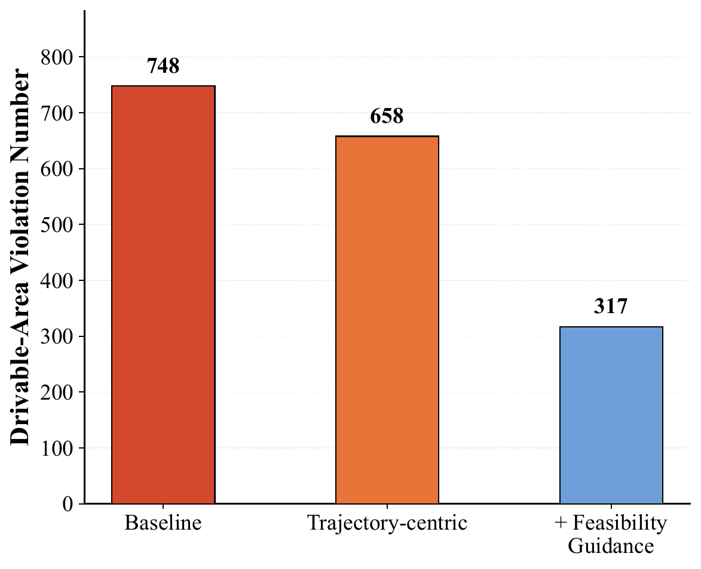
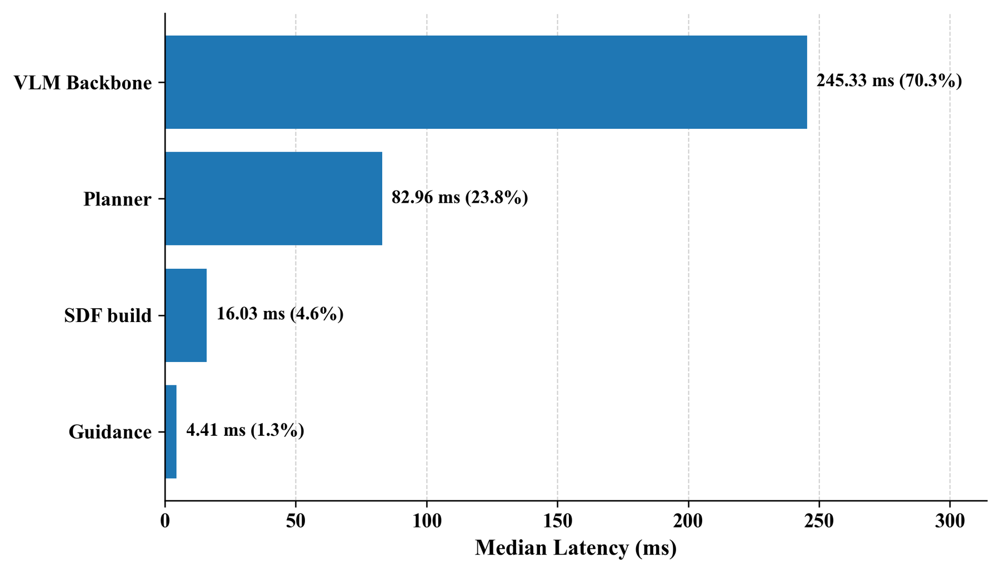

Trajectory-centric diffusion planning
The planner predicts the clean trajectory directly, making trajectory-space feasibility easier to model than conventional noise-centric parameterization.

End-to-end diffusion planning has shown strong potential for autonomous driving, but the physical feasibility of generated trajectories remains insufficiently addressed. FeaXDrive treats the clean trajectory as the unified object for feasibility-aware modeling throughout the diffusion process. Built on this trajectory-centric formulation, it integrates adaptive curvature-constrained training to improve intrinsic geometric and kinematic feasibility, drivable-area guidance within reverse diffusion sampling to enhance consistency with the drivable area, and feasibility-aware GRPO post-training to further improve planning performance while balancing trajectory-space feasibility.
The planner predicts the clean trajectory directly, making trajectory-space feasibility easier to model than conventional noise-centric parameterization.
Adaptive differentiable curvature constraints are imposed during training to reduce geometric spikes and trajectory-level kinematic violations.
Drivable-area guidance and feasibility-aware GRPO further improve drivable compliance while preserving strong closed-loop planning performance.
The clean trajectory is the shared object across training, inference, and post-training.

The model is supervised directly in clean trajectory space and regularized with adaptive curvature constraints to improve intrinsic trajectory feasibility during learning.
At each reverse diffusion step, the current clean trajectory estimate is guided using local road geometry so that the generated plan remains more consistent with the drivable area.
Post-training introduces a feasibility-aware policy optimization stage to strengthen the trade-off between benchmark performance and trajectory-space feasibility.
Three examples comparing the baseline planner and FeaXDrive.


FeaXDrive produces a more feasible trajectory with better geometric regularity and drivable-area consistency.
Supporting figures for feasibility and efficiency analysis.



If you find this project useful, please cite:
@article{wang2026feaxdrive,
title = {FeaXDrive: Feasibility-aware Trajectory-Centric Diffusion Planning for End-to-End Autonomous Driving},
author = {Wang, Baoyun and Li, Zhuoren and Liu, Ming and Zhang, Xinrui and Leng, Bo and Xiong, Lu},
journal = {Under review},
year = {2026}
}